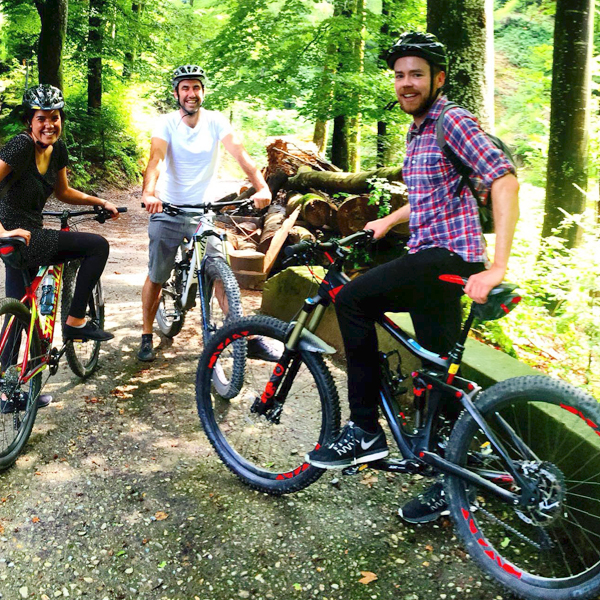
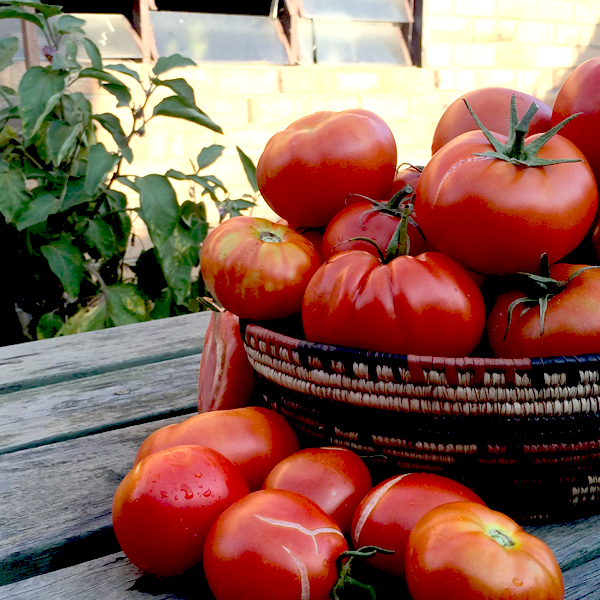
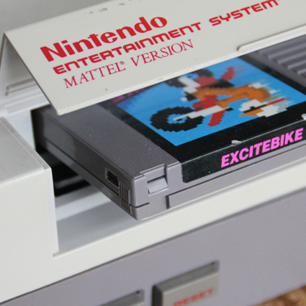

A bit about me!
If someone was to throw one of those desert island scenarios at me where I could only take three items, I would probably choose tomato seeds, a bike and an NES (Assuming of course I can figure out the power supply issues along the way). When I'm not imagining ways to create a water-powered gaming console, I spend my time making stuff. Professionally, this has meant a career in Architecture, whilst 'un-professionally' I enjoy fixing bikes, building furniture, learning to code, choreographing air-guitar moves, gardening and general tinkering. I would eventually like to see if there are ways to combine my knowledge and experience from the construction industry with coding!
Stuff I enjoy!

Mountain biking

Growing tomatoes

Retro Video Games